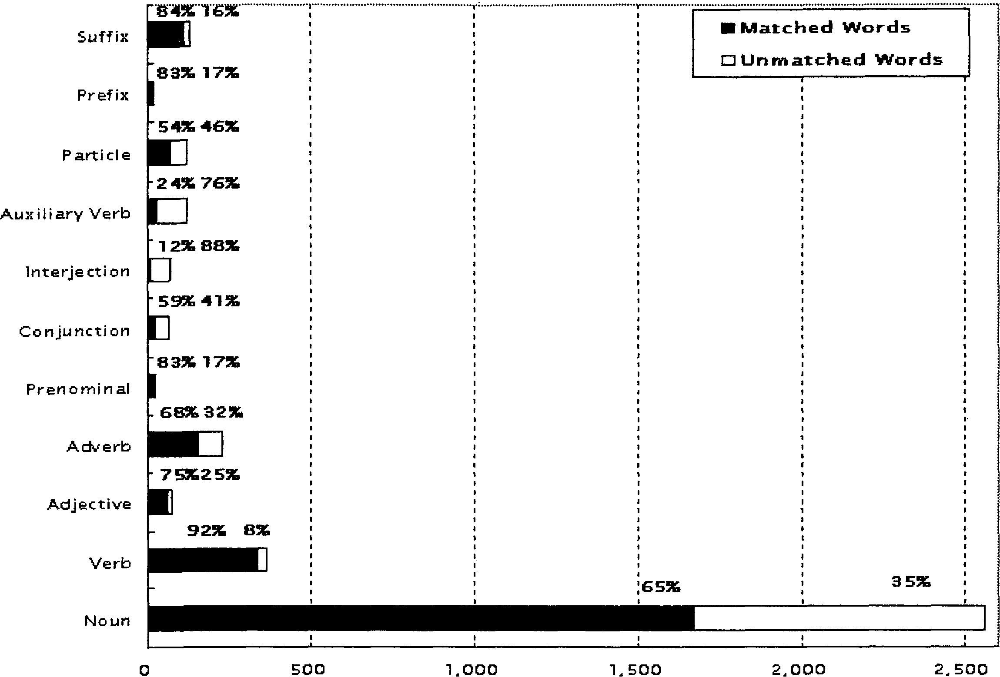

In order to develop a speech translation system that has a large vocabulary and accepts various expressions, we have carried out a practical and quantitative investigation of similarities and differences among the tasks of machine translation for written language such as newspaper articles, and those for spoken language such as conversations in daily life. First, we mention the characteristics of vocabularies for colloquial expressions in conversations. Next, we report the cbaracteristics of basic sentence patterns which consist of one predicate and essential case phrases from the viewpoint of translation from Japanese to English. Finally, we discuss state-of-the-art technology based on a case study of a Japanese-to-English speech translation system ATR-MATRIX built by ATR Interpreting Telecommunications Research Laboratories.
Bilingual corpus, conversation, spoken language, speech translation.
Current speech translation research assumes a limited task such as hotel room reservations and carries out medium vocabulary size experiments of about ten thousand words [1,2,3]. In order to enlarge the application area of speech translation systems, we must develop a large vocabulary speech translation system that accepts more expressions. Machine translation systems for written language such as newspaper articles can deal with a larger vocabulary than speech translation systems. However, there seem to be different problems for machine translation of texts and that for conversations [4]. Despite one study on a machine translation system for spoken language [5], there have not been enough studies comparing the tasks and expressions of machine translation for text and that for conversations.
NTT has recently developed a Japanese-to-English machine translation system, ALT-J/E [6], which can deal with texts such as newspaper articles. Part of its semantic dictionary has been published as a book entitled "Goi-Taikei: A Japanese Lexicon" [7] and its CD-ROM is also available [8]. On the other hand, a bilingual travel conversation corpus built by ATR Interpreting Telecommunications Research Laboratories [9,10] has already been released outside of ATR and used for research at many research institutes and universities.
A practical and quantitative analysis is necessary for good guidelines or helpful knowledge to make a machine translation system for text deal with spoken language. Therefore, we investigated characteristics of a digitized bilingual travel conversation corpus in comparison with "Goi-Taikei: A Japanese Lexicon" which is a machine-readable large vocabulary dictionary for Japanese-to-English translation.
Section 2 describes the bilingual travel conversation corpus and "Goi-Taikei: A Japanese Lexicon." Section 3 reports the characteristics of vocabularies for colloquial expressions in conversations. Section 4 presents the characteristics of basic sentence patterns which consist of one predicate and essential case phrases from the viewpoint of translation from Japanese to English. Section 5 discusses state-of-the-art technology based on a case study of a Japanese-to-English speech translation system ATR-MATRIX built by ATR Interpreting Telecommunications Research Laboratories. Finally, section 6 offers conclusions.
ATR Interpreting Telecommunications Research Laboratories have built a bilingual travel conversation corpus for speech translation research [9,10]. An interpreter to each translation direction (J to E or E to J) is assigned when collecting one conversation in order to gather good quality data. The task of the bilingual corpus involves travel conversations between a tourist and a front desk clerk at a hotel. This task was selected because of its familiarity to people, and its expected use in future speech translation systems. The interpreters speak English and Japanese in all of the conversations, and serve as a speech translation system. The human interpreters successively interpreted each utterance so we could gather basic data for developing a speech translation system. Table 1 shows an overview of the bilingual travel conversation corpus. You can find release information at http://results.atr.co.jp/products_e/.
| Number of collected conversations | 618 |
| Speaker participants | 71 |
| Interpreter participants | 23 |
| Total number of utterances | 16,107 |
| Total number of Japanese words | 301,961 |
NTT has developed a Japanese-to-English machine translation system. ALT-J/E [6] which can deal with texts such as newspaper articles. A part of its semantic dictionary has been published as a book entitled "Goi-Taikei: A Japanese Lexicon" [7] and its CD-ROM is also available [8]. It contains 300,000 Japanese words tagged with 3,000 semantic categories and 14,000 Japanese-to-English valency patterns of 6,000 Japanese verbs. Table 2 shows an overview of the items used for this study. You can find useful information at http://www.kecl.ntt.co.jp/icl/mtg/.
| Category | Number of items |
| The word dictionary | 300,000 words |
| The valency dictionary | 6,000 verbs 14,000 valency patterns |
Using utterances translated from Japanese to English in the bilingual travel conversation corpus, words were extracted and their frequency calculated. Figure 1 shows an example of the Japanese particle "no." The items separated by the symbol | are surface form, reading, standard form, and part-of-speech, respectively, and the number in () is frequency.
| Surface form | Readings | Standard form | Part-of-speech | (Frequency) |
|
No | no | no | case particle | ( 69 ) No | no | no | Sentence final particle | ( 4 ) No | no | no | Nominal particle |( 337 ) No | no | no | Prenominal particle | ( 4135 ) |
As shown in Table 3, the part-of-speech system in the bilingual travel conversation corpus is different from that of "Goi-Taikei: A Japanese Lexicon." Therefore, we made mapping tables such as those described between () in Table 3, in which a nominal particle in the bilingual travel conversation corpus is mapped to the formal keishiki noun in "Goi-Taikei: A Japanese Lexicon," a topic particle is mapped to the adverbial particle, and parallel particles, prenominal particles and quotational particles in the bilingual travel conversation corpus are mapped to case particles in "Goi-Taikei: A Japanese Lexicon."
| A bilingual travel conversation corpus | "Goi-Taikei: A Japanese Lexicon" or ALT-J/E |
| Case particle | Case particle |
| Nominal particle | N.A. (Formal keishiki noun) |
| Topic panicle | N.A. (Adverbial particle) |
| Adverbial particle | Adverbial particle |
| Parallel particle | N.A. (Case particle) |
| Conjunctive particle | Conjunctive particle |
| Sentence final particle | Sentence final particle |
| Prenominal particle | N.A. (Case particle) |
| Quotational particle | N.A. (Case particle) |
In the example shown in Figure 1, the case particle, nominal particle and prenominal particle "no" are covered by a "Goi-Taikei: A Japanese Lexicon" because the same lexical items are included through the mapping table. However, the sentence final panIcIe "no" is not covered by the "Goi-Taikei: A Japanese Lexicon." Therefore, coverage based on the word entries is 3/4 i.e. 75.0%. Coverage based on the total number of words is 4541/4545 i.e. 99.9%.
The bilingual travel conversation corpus contains word fragments because of self-repairs and disfluencies. The parts-of-speech of such fragments are tagged with "others." Moreover, inflection words are divided into a stem part and an inflection ending part in the bilingual travel conversation corpus. Therefore, we neglect a parts-of-speech such as "others" and "inflection ending." Table 4 shows the result. Figure 2 shows the coverage per pan-of-speech based on the word entries counting.
| The number of total words | Word entries | |
| Matched words | 80,685 | 2,493 |
| Unmatched words | 18,828 | 1,269 |
| Coverage | 81.1% | 66.3% |
|
 Number of words
|
Words that are not covered by "Goi-Taikei: A Japanese Lexicon" are divided into two groups. One is colloquial expressions in conversational language and the other is vocabulary dependent on the travel domain. Examples are shown in the following.
Among the words which are not covered by "Goi-Taikei: A Japanese Lexicon," the number of nouns is 888 words based on word entries and 7,261 words based on the total number of words. If we roughly estimate vocabulary dependent on the travel domain using the information of noun usage, the percentage is about 70% based on word entries and about 40% based on the total number of words. The remaining are the percentages for colloquial expressions in conversational spoken language.
Using utterances translated from Japanese to English in the bilingual travel conversation corpus, basic sentence patterns which consist of one predicate and essential case phrases were extracted and their frequency calculated. So-called dabun (assertive sentences), i.e. a kind of fragmental sentence, are frequently used in conversations. Figure 3 shows examples. The items are frequency count, basic Japanese sentence patterns, and basic English sentence patterns, respectively. The frequency count is calculated per the palr of Japanese and English sentence patterns. Basic Japanese sentence pattern consists of da predicate (a noun with da, an auxiliary verb of assertion) and essential case phrases. Da predicates are flanked by the symbol / . The symbol # is added just before the da. We extracted the surface form desu, i.e. a kind of polite expression of da, in the same form da. ga((wa)) indicates that the surface form was a topic particle wa and the function is similar to the case particle ga. Particles were sometimes dropped in conversational spoken language. If we can infer some particle in some case phrases without particles, we flank it with the symbol *. The basic English sentence patterns are surrounded by the symbol ". Parts corresponding to Japanese da predicates are indicated flanked by the symbol /. If a basic English sentence pattern contains some pronoun, we replaced it with the word "one." English constituents separated by | are those necessary for translation from basic Japanese sentence patterns.
|
1 /Ame#da/ "it /rain/" 3 /Hajimete#da/ "/be/ one's first tiine" 1 /Hajimete#da/ "/be/ one's first visit" 2 /Hajimete#da/ "/be/ the first time" 1 Nara ga ((wa)) /hajimete#da/ "this /be/ one's first trip | to Nara" 1 Kimono ga ((wa)) /hajimete#da/ "/be/ one's first time | to put kimono on" 1 Kimono ga ((wa)) /hajimete#da/ "/be/ one's first time | wearing a kimono" 1 Sore wa/o komari#da/ "that /be/ a problem" 1 Basu wo/go riyo#da/ "/take/ the bus" 1 Kochira ga/ chiketto#da/ "here /be/ one's tickets" 1 Sâbisuryô*ga* /komi#da/ "/include/ service charges" 1 Tôkyônaritakûkô wo/shuppatsu#da/ "/leave/ Tokyo Narita Airport" 1 Hitotsume ga/Tôjieki#da/ "the first stop /be/ Toji Station" 1 Chashitsu ga/iriyo#da/ "/need/ a tearoom" 3 /Go zonji#da/ "/know/" 6 /O tomari#da/ "/stay/" |
In the same manner, we have extracted general predicates such as verbs and adjectives as the basic sentence patterns. Table 5 shows the result. Only the percentage based on word entries are shown because the percentage based on the number of total words is almost the same.
| General | Dabun (assertive sentences) | |||
| Number of items | Percentage | Number of items | Percentage | |
| Correct English can be obtained. | 327 | 9.1% | 1 | 0.2% |
| Correct English cannot be obtained but a single English predicate can be inferred. | 1,413 | 39.5% | 173 | 26.1% |
| Correct English cannot be obtained and a single English predicate cannot be infened. | 1,840 | 51.4% | 488 | 73.7% |
| Total | 3,580 | 100.0% | 662 | 100.0% |
As for the general predicates such as verbs and adjectives, approximately 10% of the basic sentence patterns can be translated correctly by "Goi-Taikei: A Japanese Lexicon." For example, "Chikatetsu Karasumasen ni /noru/" can be translated into "/take/ the Karasuma subway line" if the compound word "Chikatetsu Karasumasen" is recognized as a railway. The approximately 90% of the basic sentence patterns remaining cannot be translated correctly by "Goi-Taikei: A Japanese Lexicon." However, for approximately 40% of basic sentence patterns, we can easily infer single English predicates. Typical examples are as follows.
We cannot infer single English predicates to the approximately 50% of basic sentence patterns remaining. Typical examples are as follows.
On the other hand, as for so-called dabun (assertive sentences), only one pattern "Ame da (it rains)" is covered by "Goi-Taikei: A Japanese Lexicon." In other words, almost all patterns of dabun (assertive sentences) are not translated by "Goi-Taikei: A Japanese Lexicon." We can infer single English predicates to approximately one fourth of them such as "Chashitsu ga/iriyô#da/" which means "/need/ a tearoom." We cannot infer a single English predicate to the remaining three fourths of them such as "Shibikku wo nidai da" which means "two Civic" if English predicates such as "rent" or "reserve" must be output.
We discuss state-of-the-art technology based on a case study of a Japanese-to-English speech translation system ATR-MATRIX built by ATR Interpreting Telecommunications Research Laboratories [1]. Real examples output from the system are as follows.
ATR-MATRIX can output correct English from Japanese expressions such as "Chashitsu ga iriyô desu (The tea ceremony room is necessary)." "Shiharai wa kâdo desu (I will pay for it by card)" could be translated into "The payment is by the card" because some translation examples were prepared and successfully selected. However, "Shibikku ga nidai desu (Two Civic)" was translated into "Civic is two" because content words were replaced in the English syntactical structure pattern directly corresponding to source the Japanese syntactical structures.
Previous research on speech translation systems assumed cooperative dialogues between two people such as conversations between a tourist and a front desk clerk at a hotel. Sugaya et al. confirmed that users could achieve their task such as hotel room reservations through state-of-the-art speech translation systems because users sometimes uttered similar expressions after mis-recognitions, or the other party sometimes uttered confirmation questions after mis-translations [3]. ATR-MATRIX conld sometimes translate some constituents such as important key words based on the partial translation mechanism [11]. Important key words help the user of speech translation systems to understand the other party's message in the situation. Therefore, ATR-MATRIX could help communication between Japanese- and English-speakers, even though state-of-the-art speech translation conld not avoid recognition and translation errors.
In order to develop a large vocabulary speech translation system that accepts various expressions, translating key words does not always help users. High quality translation is indispensable for the announcements because a quick response from the other party cannot be expected. Therefore, we must improve the quality of translation, in particular for the category where "Correct English cannot be obtained and a single English predicate cannot be inferred." in TabIe 5.
We are planning to build a basic sentence pattern dictionary of conversational language for Japanese-to-English translation based on the data obtained by this study. Such a dictionary is expected to offer broader coverage than the original data
According to Table 4, the coverage based on the total number of words is broader than that based on the word entries, so that the vocabulary size may be limited by assuming a limited domain. However, as for the basic sentence patterns, the percentage based on the number of total words is almost the same as that based on the word entries. Even if the vocabulary size may be limited, the basic sentence patterns, which are combinations of lexicons, may not be limited, or, the corpus size may be too small to obtain the necessary information for building a broad coverage translation dictionary. We will study the density or sparseness of the corpus in both practical and theoretical manners.
Using "Goi-Taikei: A Japanese Lexicon" we have analyzed the characteristics of a bilingual travel conversation corpus built by ATR Interpreting Telecommunications Research Laboratories. There seem to be different problems for machine translation for texts and that for conversations, but there have not been enough studies comparing the two. Therefore, we investigated characteristics of a digitized bilingual travel conversation corpus in comparison with a machine-readable large vocabulary dictionary for text, both of which are available to the public. Such kinds of practical and quantitative analysis are expected to yield good guidelines or helpful knowledge to make a machine translation system for text deal with conversational language.
The authors wish to thank members at the Natural Language Processing Systems Department, Service Systems Division, NTT Advanced Technology Corporation for their contributions to the analysis and investigation.